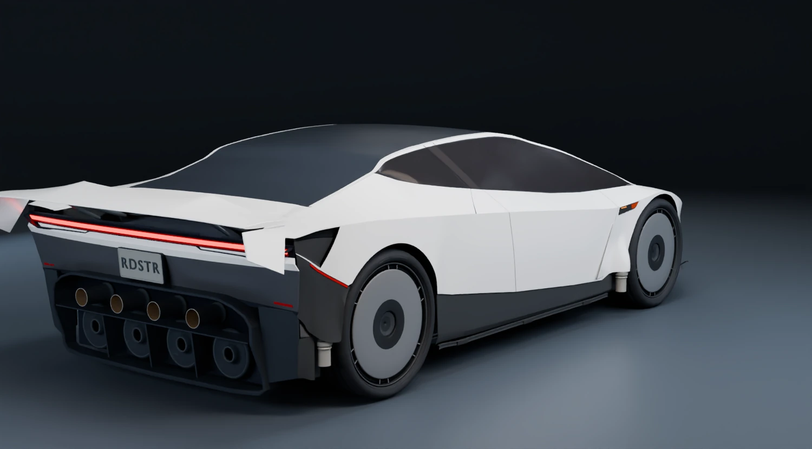

Rocket 飞行试驾
模拟参数
冷气动力
试飞场
从地面起步，手动升空。
用有限的氮气完成一次起飞与着陆。
离地高度—m
地速—km/h
垂直速度—m/s
氮气余量250kg
推力0%
预计剩余—s
地面可先试驾，升空后可分别调整三个姿态轴。
怎么操控
手机可双手同时操作。按住「推力 ＋」增加升力，松手保留推力。离地后用右摇杆调整俯仰和横滚，用左、右偏航键转动车头。按「平衡推力」设置当前车重对应的垂直推力，着陆前保持车身水平，轻减推力。
- W A S D
- 地面前进、倒车和转向，空中前后左右平移
- 方向键 / Q E
- 俯仰、横滚 / 左右偏航
- PgUp PgDn / 空格
- 增减持续推力 / 按住临时全推
- H / X / R
- 平衡推力 / 切断推力 / 复位补气
- C / P
- 切换视角 / 暂停或继续
储气量与模拟参数
发布会上公布的 Rocket 两只储气容器共约 600 L，装载约 250 kg 氮气。后舱容器约 200 L，另一只约 400 L。网页从满气出发，以质量记录余量。Tesla 发布会 ↗ · Hagerty 现场采访 ↗
Godot 以刚体模拟重力和姿态。设定干重 1,650 kg，满载峰值升力约 30.7 kN，等效喷速取 600 m/s。满升力时每秒耗气约 51.2 kg，单独垂直全推约 4.9 秒，转向和平移会增加消耗。预计剩余秒数按当前剩余质量除以瞬时耗量计算。实车的持续悬停时间尚未公开。冷气推进器参数参考 ↗